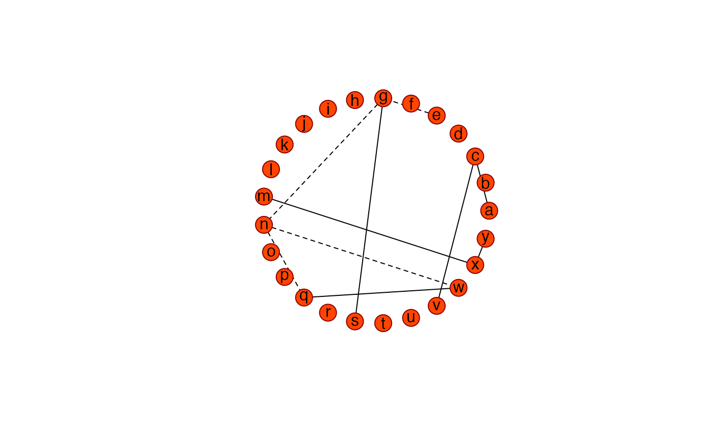

Function that calculates various network statistics from a sparse precision matrix. The sparse precision matrix is taken to represent the conditional indepence graph of a Gaussian graphical model.
GGMnetworkStats(sparseP, as.table = FALSE)An object of class list when as.table = FALSE:
A numeric vector with the node degree for each node.
A numeric vector representing the betweenness
centrality for each node.
A numeric vector
representing the closeness centrality for each node.
A numeric vector representing the eigenvalue
centrality for each node.
An integer vector representing
the number of negative edges for each node.
An integer
vector representing the number of positive edges for each node.
A logical indicating if the implied graph is chordal.
A numeric vector with the mutual information (with
all other nodes) for each node.
A numeric vector
representing the variance of each node.
A
numeric vector representing the partial variance of each node.
When
as.table = TRUE the list items above (with the exception of
chordal) are represented in tabular form as an object of class
matrix.
The function calculates various network statistics from a sparse matrix. The
input matrix P is assumed to be a sparse precision or partial
correlation matrix. The sparse matrix is taken to represent a conditional
independence graph. In the Gaussian setting, conditional independence
corresponds to zero entries in the (standardized) precision matrix. Each
node in the graph represents a Gaussian variable, and each undirected edge
represents conditional dependence in the sense of a nonzero corresponding
precision entry.
The function calculates various measures of centrality: node degree, betweenness centrality, closeness centrality, and eigenvalue centrality. It also calculates the number of positive and the number of negative edges for each node. In addition, for each variate the mutual information (with all other variates), the variance, and the partial variance is represented. It is also indicated if the graph is chordal (i.e., triangulated). For more information on network measures, consult, e.g., Newman (2010).
Newman, M.E.J. (2010). "Networks: an introduction", Oxford University Press.
## Obtain some (high-dimensional) data
p = 25
n = 10
set.seed(333)
X = matrix(rnorm(n*p), nrow = n, ncol = p)
colnames(X)[1:25] = letters[1:25]
Cx <- covML(X)
## Obtain sparsified partial correlation matrix
Pridge <- ridgeP(Cx, 10, type = "Alt")
PCsparse <- sparsify(Pridge , threshold = "top")$sparseParCor
#> - Retained elements: 10
#> - Corresponding to 3.33 % of possible edges
#>
## Represent the graph and calculate GGM network statistics
Ugraph(PCsparse, "fancy")
#> Warning: 'as.is' should be specified by the caller; using TRUE
#> Warning: 'as.is' should be specified by the caller; using TRUE

#> [,1] [,2]
#> [1,] 1.00000000 0.0000000
#> [2,] 0.96858316 0.2486899
#> [3,] 0.87630668 0.4817537
#> [4,] 0.72896863 0.6845471
#> [5,] 0.53582679 0.8443279
#> [6,] 0.30901699 0.9510565
#> [7,] 0.06279052 0.9980267
#> [8,] -0.18738131 0.9822873
#> [9,] -0.42577929 0.9048271
#> [10,] -0.63742399 0.7705132
#> [11,] -0.80901699 0.5877853
#> [12,] -0.92977649 0.3681246
#> [13,] -0.99211470 0.1253332
#> [14,] -0.99211470 -0.1253332
#> [15,] -0.92977649 -0.3681246
#> [16,] -0.80901699 -0.5877853
#> [17,] -0.63742399 -0.7705132
#> [18,] -0.42577929 -0.9048271
#> [19,] -0.18738131 -0.9822873
#> [20,] 0.06279052 -0.9980267
#> [21,] 0.30901699 -0.9510565
#> [22,] 0.53582679 -0.8443279
#> [23,] 0.72896863 -0.6845471
#> [24,] 0.87630668 -0.4817537
#> [25,] 0.96858316 -0.2486899
if (FALSE) GGMnetworkStats(PCsparse) # \dontrun{}